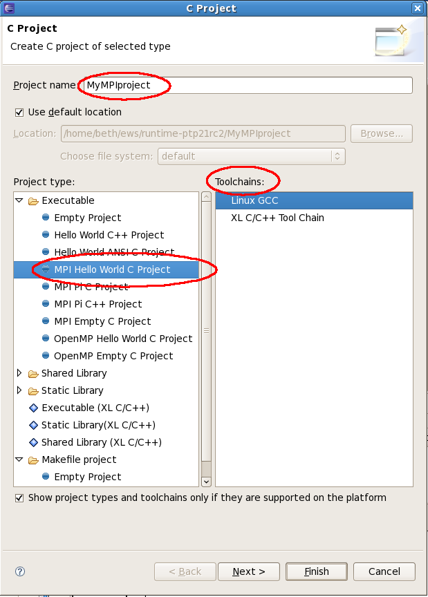
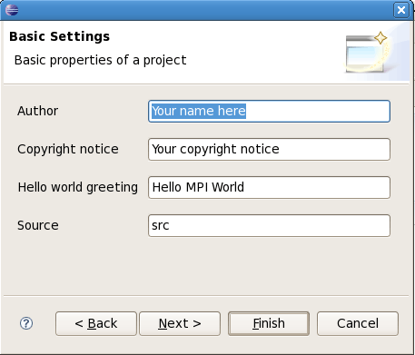
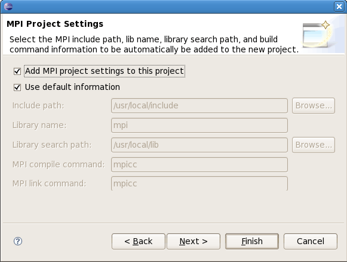
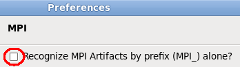
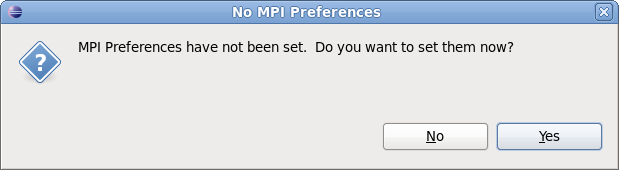

This section describes how to set up a simple local C/C++ project for MPI. A local project exists on the local machine (same machine on which Eclipse is installed). See also the information about creating synchronized projects, where source code etc. is mirrored on the local machine as well as a remote target on which you can build and run the program. For another sample project creation example using synchronized projects, see Introduction to MPI projects (synchronized and local)
There are several ways to set up the MPI information in an Eclipse C/C++/Fortran project:
You should see A Word about Include Paths and MPI Preferences for a discussion about the different ways you can set up your project, including the MPI Preferences, to find the include paths for build as well as for other Eclipse tools.
Note: the older versions of CDT (4.0 and earlier) refer to a C project in which it manages the makefile as a "Managed Make Project" or a "Managed Build Project." They refer to a project which you supply the makefile is a "Standard Make project".
The current version of CDT that works with PTP 7.0 is CDT 8.2. CDT 5.0 and later refers to a C project in which it manages the makefile as just a "C Project" and a project which you supply the makefile is a "Makefile project."
Both terminologies are sometimes used in these instructions.
One way to create a new MPI C project is to use the menu: File->New->C project (if you are already in the C/C++ perspective this may be the simplest). There are several other ways to get to this wizard (including context menu in the Project Explorer view).
In the first wizard dialog page, "C Project," enter a project name; under Project types, expand 'executable' and select, e.g. "MPI Hello World C project"
Note: be sure to select a valid toolchain on the right side of this dialog. Your system may provide different toolchains,
and the selection may be different from what is shown here.

Select Next to go to the next page of the New Project Wizard.
On the Basic Settings page of the wizard, fill in any project template values, e.g. your name
in the Author field.
The Author is simply used in a comment in the file. The "Hello World greeting" is used in the sample statement
in the code that is generated. The "Source" field indicates the name of the source folder that is generated in the project.
Then select Next.

On the next page, "MPI Project Settings" page, the "Add MPI project settings to this project" should be checked.
If you want to change any of the default values for this project, you can do so
here by unchecking the "Use default information" and altering the values.
The default values were chosen based on input to the PLDT MPI Preferences page.
To have a specific include path added to all new MPI projects, see below
for how to specify the MPI Include path in the Preferences.

Select Finish.
The project is created and should build automatically.
The Eclipse workbench is shown below after creating the new "MPI hello world" project.
The project explorer view on the left shows the project contents.
The source file is under the 'src' directory; expand this to see it.
Double-click on the source file name to edit the source file. The outline view on the
right shows the outline of the file currently shown in the editor.
The Console view at the bottom shows the results of the project build.
Now continue to set up to run the MPI tools
If the new project wizard isn't used as described above to set the MPI information for a project, the MPI information can be added to the project manually as follows.
Project Properties, C/C++ Build, Configuration Settings, Tool Settings tab, GCC C Linker, Libraries


Note that the above instructions describe how to add information to C projects in which the makefile is generated for you, previously known as "Managed Build" projects. If you provide your own makefile, you will create a "Makefile project" and create the makefile within that project. See Setting up project properties for a Makefile project.
Note: if you have modified the MPI Preferences to Uncheck "Recognize MPI Artifacts by prefix (MPI) alone?" then the header file must be located for MPI artifacts to be recognized.

So if
you are not recognizing MPI artifacts by prefix alone, then PLDT will have to use include files to
identify MPI artifacts. If you have not set the MPI includes on the MPI Preferences page yet,
you'll be prompted after the first page in the new project wizard dialog:

See A word about includes and MPI preferences for more information and how to fill this in.
Now continue to set up to run the MPI tools